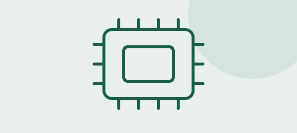

Procesador
El procesador ejecuta las instrucciones de los programas. Cuando abrimos una aplicación, realiza operaciones y coordina el trabajo con otros componentes. Su rendimiento depende de varios factores, como su arquitectura y la tarea que está realizando.